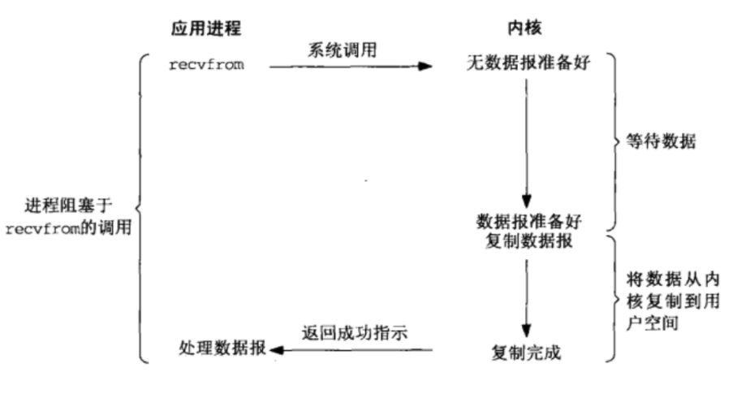
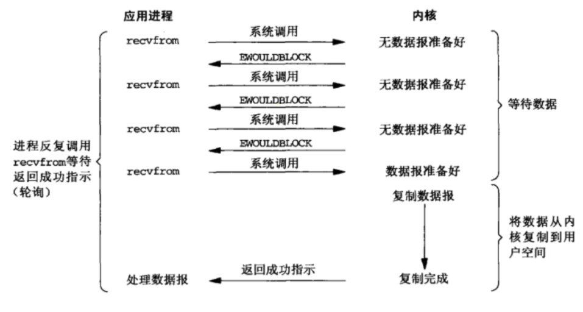

event driven model
why need event driven model
In a sense, this isn’t really different from what you might do with threaded I/O, but it has much reduced overhead in the form of memory, context switching, and general “housekeeping”, and takes maximum advantage of what operating systems do best (or are supposed to, anyway): handle I/O quickly.
事件驱动模型必须配合使用非阻塞IO，不然当前进程/线程会花大量的时间去等待（相比于真正的处理时间）。非阻塞io，在不可用时（包括缓冲区满、request还没有到来），会产生EWOULDBLOCK，此时会出让资源（如CPU）给其他任务。
- blocking io

- non-blocking io
